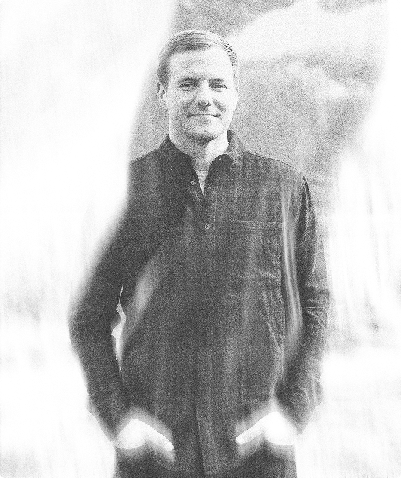

I believe brand matters more today than it ever has. Because I work across brand, web, and product design, I can shape your identity and protect it every step of the way, so none of the magic disappears when it's time to build your site or app.
Right now I’m freelancing as an independent brand, web, and product designer. I love working with early-stage founders who are defining how their brand shows up in the world, or rethinking it.
I also contract with agencies of all sizes, in whatever capacity is useful. I enjoy plugging into other teams and making great work together.
For as long as I can remember, I’ve been fascinated by logos. It was always a mystery to me how one person, or one team, could create a single mark that made a company memorable to its customers. Once I was introduced to brand design, I learned it takes much more than a logo to make that happen, and I’ve been helping companies solve that problem ever since.
Today I combine my love of brand design with my experience designing websites and apps to create holistic brand experiences. Now that anyone can spin up a working prototype or website in minutes, I believe brand is the layer that makes those experiences memorable, and getting it right from the start matters more than ever.
I believe good design is reductive, but to reduce something to its best form, you first have to go wide. Get maximal, leave no stone unturned, then come back and decide what can go. A great teacher once taught me that a design isn’t done until there’s nothing left to remove, and everything that remains has a reason to be there. That is design. Everything else is decoration. Less, but better.
Salt is essential to almost any recipe, but it’s best used with restraint. Too much and it overwhelms. Too little and something feels off. When it’s just right, you barely notice it. It sits in the background and lets the main idea sing. The skill is knowing when to add a pinch and when to stop.
Good work can happen quickly, and I often work in sprints, but the best work benefits from time and space to breathe. Ideas tend to surface after you’ve stepped away, when your mind is free to wander and connect dots you couldn’t see up close. Letting a project breathe brings clarity. It reveals what’s working and what can go. It’s not about slowing down. It’s about giving ideas room to grow stronger.
